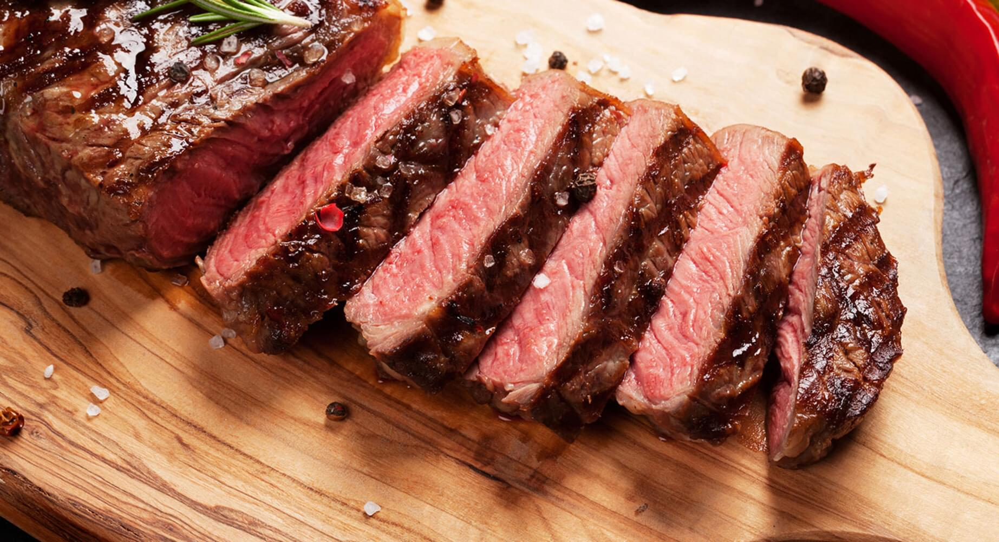

Ingredients
- striploin steak
- salt and pepper
- 2 teaspoons of olive oil
- other seasoning of your choice (optional)
put your stake on a cutting board, next rub your olive oil into your stake then, season generously with salt pepper and seasonings of your choice. let the seasoning penetrate it for 5mins.
after the steak is done resting turn your grill up to high heat. once the grill is hot place your steak on the grill and do a quarter turn in 1minute and 30 seconds after you turn the steak let it cook for another 1minute and 30 seconds then flip it and repeat the process once and remove from the grill.
once you have removed your steak from your grill place it on a plate and cover it with a bowl ant let it rest for 10 minutes maximum. after the rest, serve and enjoy :)